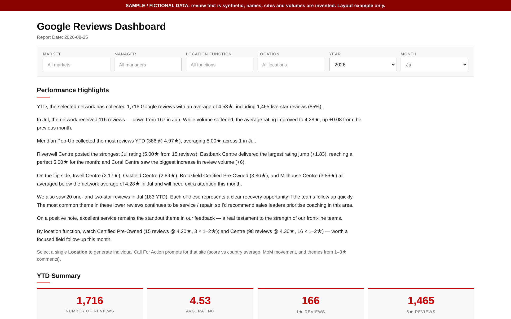
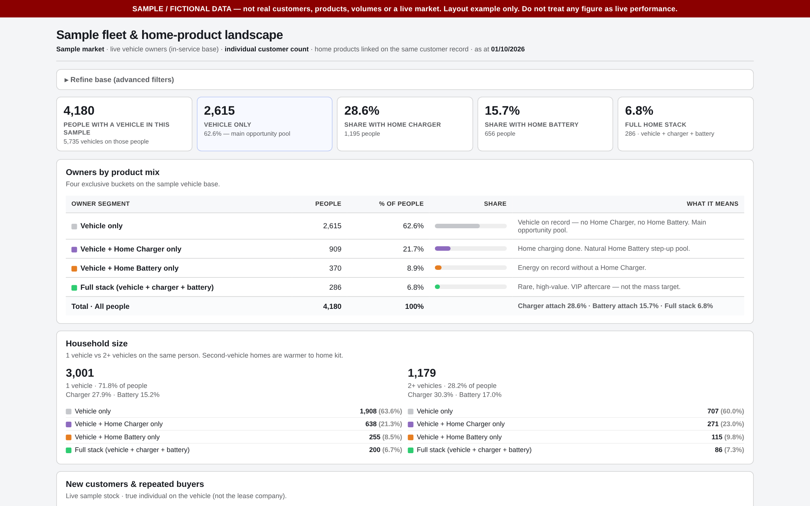

Selected work
Customer insight in practice
Three tools I built in automotive and energy retail, rebuilt here with fictional data so you can explore them live.

01
Voice of the customer across a retail network
A monthly view of ratings and written feedback for 100+ sites. It writes its own summary, groups praise into themes and lists the comments that need follow-up.
Read case study
02
Who owns what: a cross-sell map of the customer base
Every customer's product holdings in one place, showing the main opportunity pool, the step-up pool and how loyalty grows by cohort.
Read case study
03
Running a retail partnership week by week
A weekly review of orders, quotes and referrals for a joint retail partnership. It names each site's issue and the action to take.
Read case study